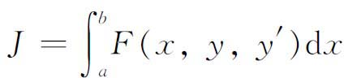
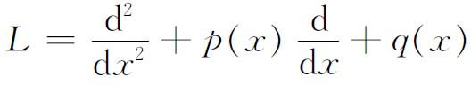
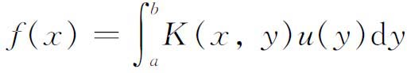

1．泛函分析的性质
数学中许多领域处理的是作用在函数上的变换或算子，这件事在接近19世纪后期已经很明显了。例如，即使是常微分运算和它的逆（反微分），也是作用在一个函数上以产生新的函数。在变分法的问题中，人们处理形如

的积分，这个积分可以看作是作用在一类函数y（x）上的运算，问题是要在这类函数中找出一个使积分取最大值或最小值的函数。微分方程领域提供了另一类算子，例如，微分算子

作用在一类函数y（x）上，把它们变换为另外的函数。自然，为了解微分方程，人们要寻找特殊的y（x），使得L作用到这个y（x）上得到0，并且这个函数也许还得满足初始条件或边界条件。作为算子的最后一个例子是积分方程。方程

的右边可以看作是作用在不同的u（x）上并引出新的函数来的一个算子，虽然仍像微分方程的情形一样，方程的解u（x）是变换成f（x）的。
推动创立泛函分析的思想是，所有这些算子都可以在作用于一类函数上的算子的一种抽象形式下加以研究。进而，这些函数可以看作空间的元素或点。这样，算子就把点变成点；在这种意义下，算子是普通变换（例如旋转）的一种推广。上述算子中有一些是把函数变成实数，而不是变成函数。那些变到实数或复数的算子，今天称为泛函，而算子这个名称则用来通称把函数变为函数的变换。因此，泛函分析这个名称［它是莱维（Paul P．Lévy，1886—1971）引进的，当时泛函是关键的概念］，并不是十分合适的。探求一般性和统一性，是20世纪数学的特征之一，而泛函分析所追求的正是这些目的。